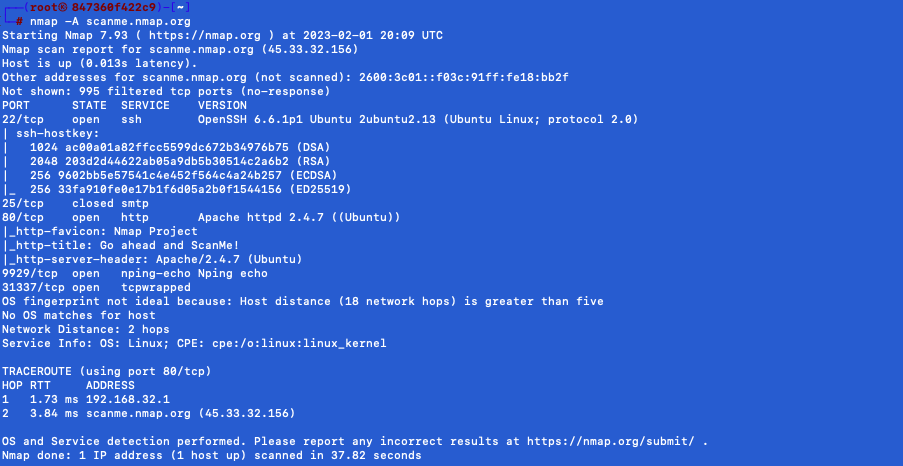

Nmap
1. Objectif de l'outil
Nmap (« Network Mapper ») est un outil open source d'exploration réseau et d'audit de sécurité. C'est un outil open
source utilisé pour scanner les réseaux et pour découvrir les hôtes connectés et les services associés à ces hôtes.
Il peut être utilisé pour des tâches telles que la reconnaissance des ports, la détection des systèmes
d'exploitation, la vérification de la sécurité des réseaux, etc.

Nmap innove en utilisant des paquets IP bruts (raw packets) pour déterminer quels sont les hôtes actifs sur le
réseau, quels services (y compris le nom de l'application et la version) ces hôtes offrent, quels systèmes
d'exploitation (et leurs versions) ils utilisent, quels types de dispositifs de filtrage/pare-feux sont utilisés,
ainsi que des douzaines d'autres caractéristiques.
Nmap est généralement utilisé pour les audits de sécurité mais de nombreux
gestionnaires des systèmes et de réseau l'apprécient pour des tâches de routine comme les inventaires de réseau, la
gestion des mises à jour planifiées ou la surveillance des hôtes et des services actifs.
2. Configuration
Pour ce tutoriel, nous utiliserons docker pour avoir une machine pour lancer l'outil Nmap.
Télécharger le dossier suivant :
docker
Taper les commandes suivantes (en étant dans le bon répertoire où se trouve le fichier docker-compose.yml):
docker-compose up -d
Pour utiliser la machine avec l'outil Nmap, tapez :
docker exec -it nmap bash
3. Lancer la recherche
Tapez la commande suivante pour lancer le scan sur une adresse IP ou un nom d'hôte:
nmap -A scanme.nmap.org
Le résultat apparait comme ceci :
